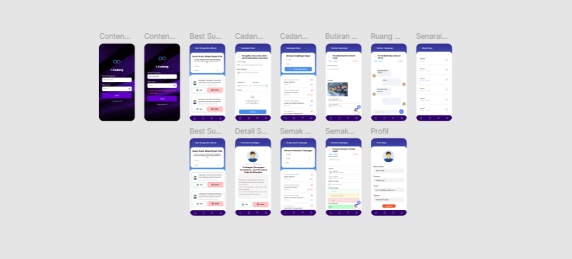

INTERNSHIP PROJECT
i-Cadang Enterprise Mobile App
Developed an internal mobile application end-to-end during my industrial training at Favotech System, engineering the front-end using Flutter and integrating back-end services using Laravel.